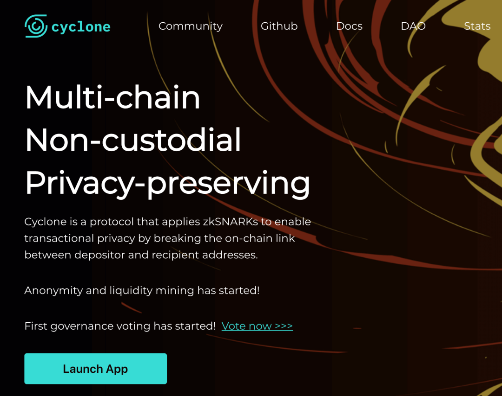
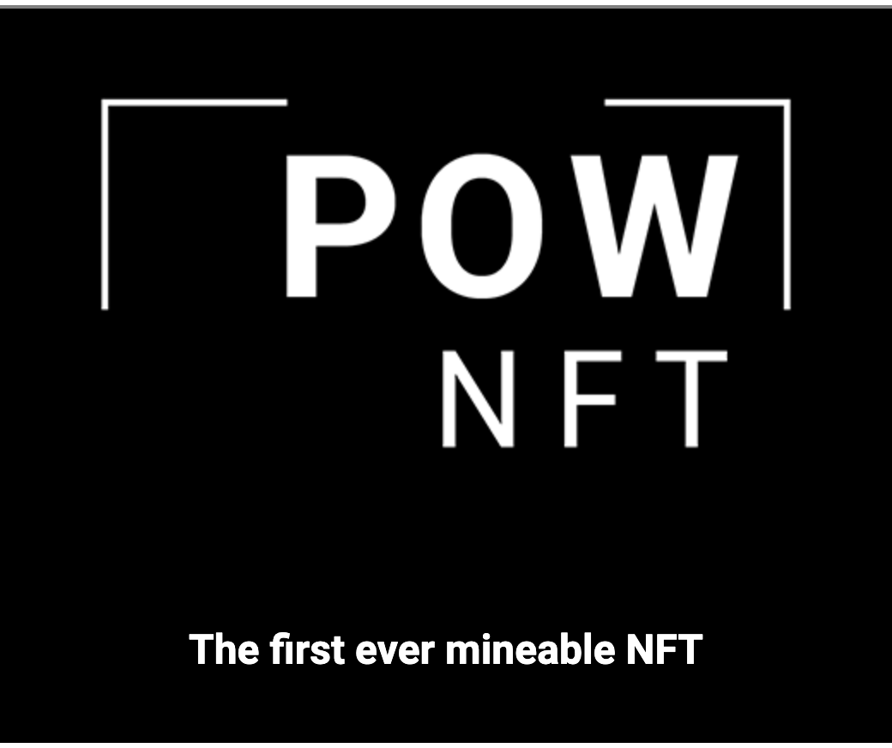
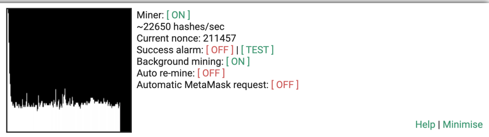
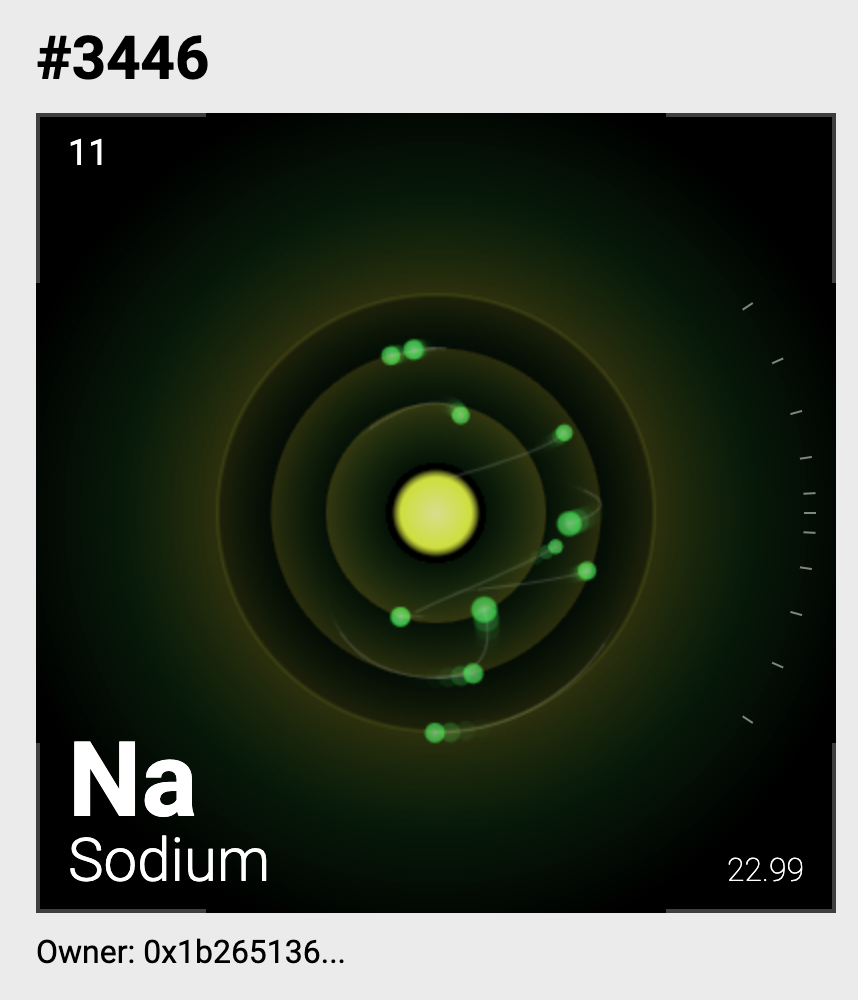
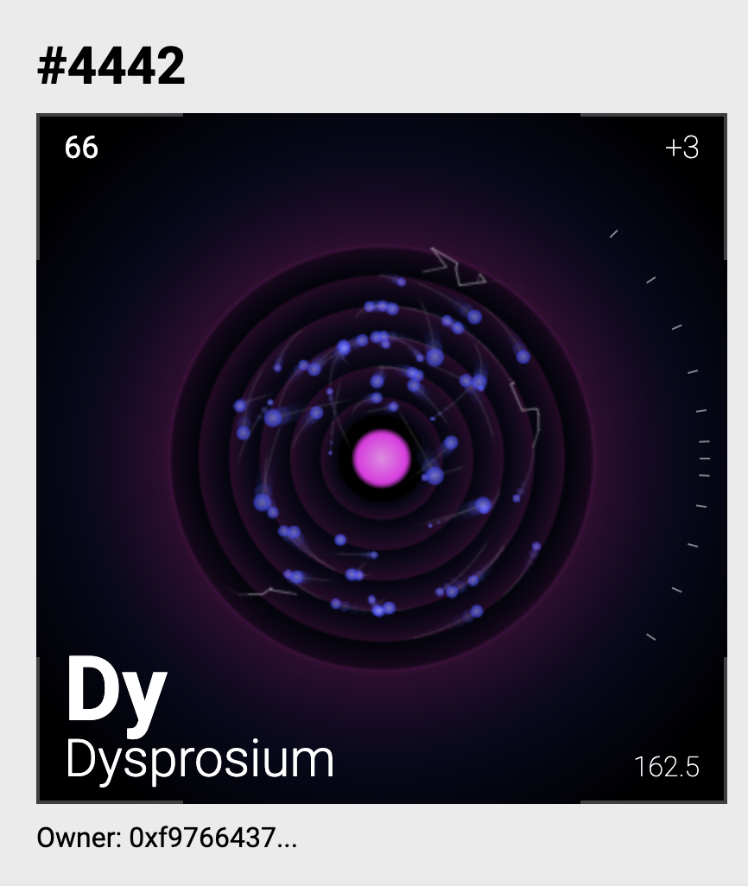
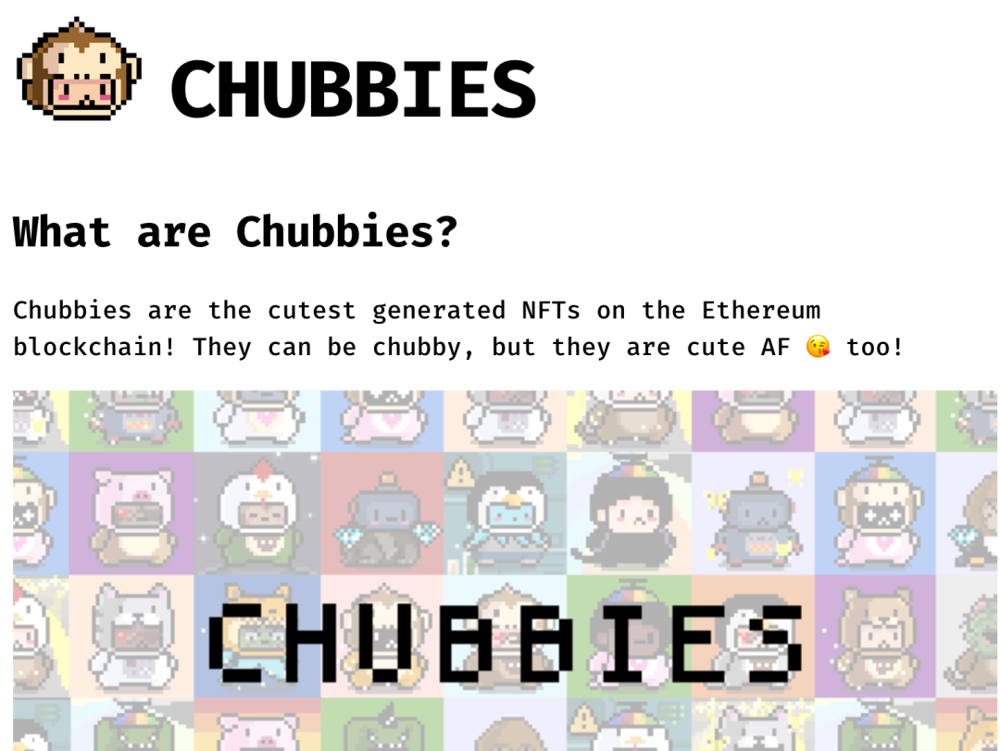
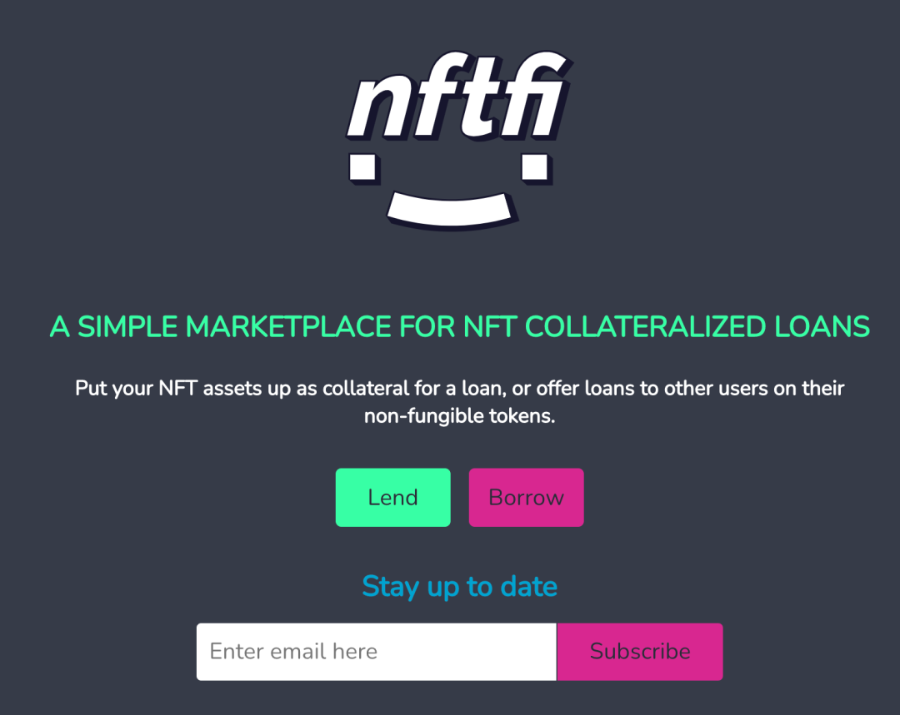
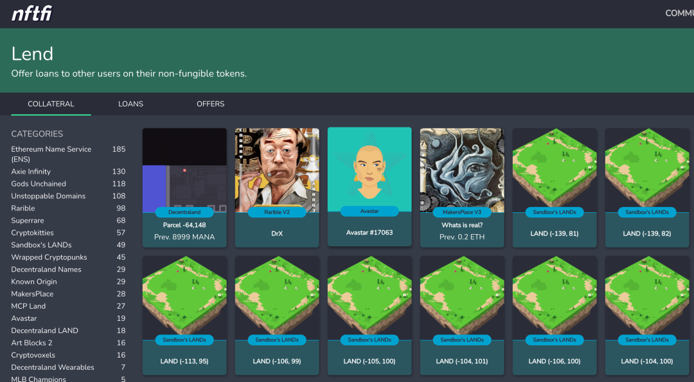
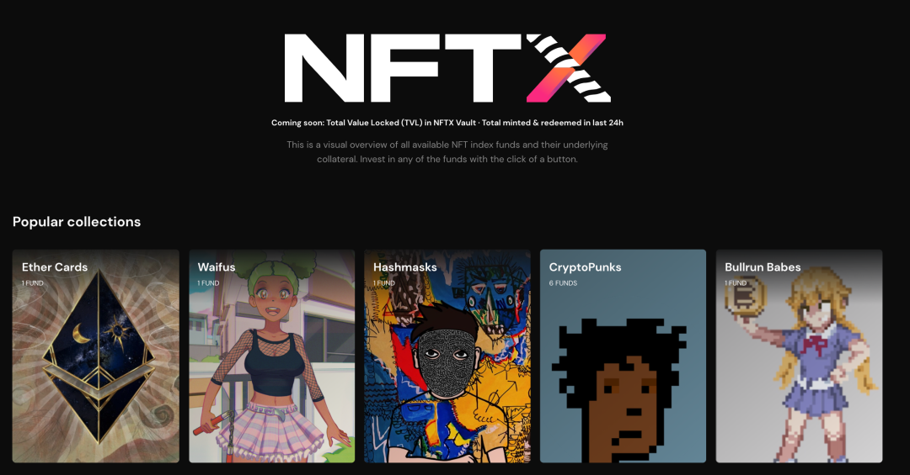
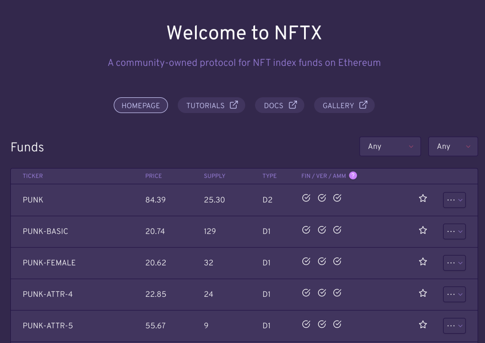

--点击左上蓝字“高小猫”关注我---
微信号：gaoxiaomao88
--点击左上蓝字“高小猫”关注我---
微信号：gaoxiaomao88
又一周过去啦，回头看看上周的记录，恍如隔世，继续回顾一下上周发生的事情，然后展望一下下周吧。
1.Cyclone

Cyclone这个项目是我上周密切关注的一个项目。上周CYC的匿名池跨链到了BSC的链上，然后开了1池和2池。
1池的机制类似于Tornado.cash这个项目。当你存入一定量想要匿名化的币的时候，也需要对应地存入一定量的CYC代币。
然后只要你的资金在池子里，就可以持续获得CYC代币的分红。
截止目前，1池的白嫖年化还有40%左右（BUSD池），我觉得还是相当不错的。
而2池就是传统的2池。
在Pancakeswap上提供BNB/CYC的流动性，就可以获得CYC的奖励。
当然奖励越高，风险也越高。这个池子的主要风险在于CYC以及BNB下跌的风险。
我个人非常看好CYC这个代币，它目前的市值只有10个million，但是它是第一个BSC上的匿名币项目，也是据我所知唯一一个跨链匿名币项目。因此我个人观点是它的市值应该绝不止于此。
在这个项目起来之前，BSC上由于没有匿名币项目，其实就算项目跑路，资金也出不去。这从安全性来说当然是好事，但是也从侧面反映出BSC的中心化问题。
随着CYC这类项目对于BSC链生态的完善，BSC也会逐渐变得越来越开放，越来越去中心化，这对于BSC本身的生态来说是很有好处的，反过来也会推动CYC这类的项目进一步发展。
【提示，币圈有风险，任何币种随时有可能归零，因此作者在此的观点不构成任何投资建议】。
2.一些NFT项目
pownft

上周除了关注CYC，我还关注了一些新的NFT项目。一个是https://www.pownft.com/这个项目。它的机制很有意思，结合了POW的算力挖矿和NFT的概念。
任何一台机器都可以接入这个项目，然后用自己的机器提供一定量的算力来挖“原子”这种NFT。

大家知道元素周期表上大约有100多种不同的元素，每种元素都有其不同的元素比例。pownft也是采用了类似的机制，根据不同元素在地球上的稀有程度，决定了不同元素被挖出的概率。
一旦挖出来以后，就可以花费一定量的gas来吧对应的原子mint出来。然后这些原子NFT就可以在opensea上被交易了。目前比较常见的元素，比如H，He等大约定价在0.2ETH左右，对于比较稀有的元素，大约定价在0.5ETH左右。


注：目前一个ETH大约1800美金左右。
我个人也挖了一段时间，不过虽然挖出过几次，但是在确认的时候由于确认得太慢了，都没抢到，有点可惜。平均来说每抢到一次，获利至少也是0.1个ETH。
Chubbies

除了pow nft这个项目。我还关注了https://chubbies.io/这个项目。它是一个模仿hashmask的NFT项目。也是随着认购量的不断增加，认购价格也会不断升高。然后每个NFT其实就是一个小人，然后它的不同部位会有不同的饰品和图片，类似于一个qq秀这样。
我自己大约买了20个，平均每个0.08ETH，一半挂在opensea上准备翻倍价格出售，目前已经卖掉了4个左右，剩下的也有望在近期出掉。
长期来看对于NFT的价格是否能长期保持，我持怀疑态度。但是我个人觉得这个概念非常有意思，值得持续关注和尝试。
nftfi

还有一个叫https://nftfi.com/的项目我也觉得非常有意思。
我们知道在现实中艺术品的抵押融资是一个新兴的行业，具有广泛的市场。如果我们把NFT当做数字货币世界的艺术品市场的话，那NFT的抵押融资将会是一片广阔的待开发的市场。而nftfi这个项目做的就是这个事情。
在nftfi上你可以把自己拥有的nft挂在平台上。然后市场上的参与者可以自愿offer你一定量的贷款以及对应的利息。

如果你愿意的话，你就可以把你自己的nft抵押给对方，从对方那里拿到对应的款项。
一旦到期以后，你需要把对应的款项归还回去，如果不归还的话，智能合约就会自动执行清算，把nft清算给对方。
当然这个方式还非常原始，完全是p2p的一种机制。不过我觉得从这样的机制出发，其实可以衍生出很多有意思的玩法。总之我非常看好这个项目的前景，不过他们暂时还没有发币，因此我会持续关注。
nftx

类似的还有一个叫https://nftx.org/#/的项目。这个项目解决的是另外一个NFT领域的痛点：流动性。
它的基本想法是这样的：由于每个NFT都是不同的，因此每一个都会有一个单独的定价，这导致买家和卖家其实很难对于某一个特定的NFT达成共识。
就算某一类的NFT整体价格上涨，如果卖家很急着想要把NFT卖掉，也很难找到合适的买家来以市场价来购买。类似的，一个买家如果比较着急，也很难以市场价购买到某一类NFT，而要支付较高的溢价。
NFTX的解决方法是针对每一类的NFT都构建一个池子。交易者可以把自己某一类的NFT放入池子，获得该类NFT池子对应的一定比例的代币。之后如果要兑换回去的时候，就可以用这个代币来随机从池子里兑换出来一个该种类的NFT。

当然这里我觉得这个设计可能有些欠考虑。比如是不是可以让兑换者从池子里兑换出NFT的时候，不要用随机的形式，而是可以让兑换者选择。然后对于池子里当前的不同NFT，可能有一些可以标上一定的溢价，这样子池子里就不会全都是该类NFT中最不值钱的那一些了。
尽管项目不错，但是最近由于NFT整体板块非常火热，因此这个项目的NFT代币已经很贵了。从他们ICO的40多块已经涨到了最近的280多，接近7倍的涨幅，因此现在入场还是需要谨慎。
nft小结
我个人最近一段时间研究了这么多NFT相关的东西，整体对于这个东西也有一定观念上的转变。就像《道说区块链》的作者说的，对于看不懂的东西不要一上来就否定它，而是要以虚心的态度持续地去了解，关注，学习。对于NFT我也是这样一种状态，持续地去关注这个领域一些新出现的东西。
3. 一些教训
这周清仓了一些项目。回过头来看，对于一些入局的时候逻辑没有看得很清晰的东西，还是要谨慎。
要尽量少动，但是每一次动的时候都要做好充足的准备，对项目有一个全面的了解以后再投。这样子就算项目下跌，也可以拿得住，不会对自己有怀疑。
如果最终在这个项目上亏了钱，也可以有对应的经验教训可以总结。
而如果没有一个清晰的认识，那在复盘的时候连可以总结的东西都没有，就会比较吃亏了。
与这个相关的，我最近虽然看的项目还是不少，但是参与的新项目也在逐渐减少。
就像微博上某币圈大v说的，2020年初的时候，满地的蒙尘宝石，没有人捡。但是最近，满地的垃圾，但是一群人在地上疯狂寻找宝石。
最近币圈里还被低估的新项目已经很少了，因此我自个人主要还是以白嫖挖矿为主，套利为辅，新项目快进快出，绝对不恋战。

扫码关注我